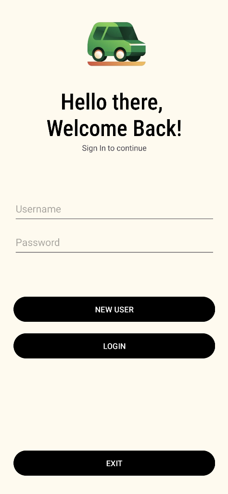
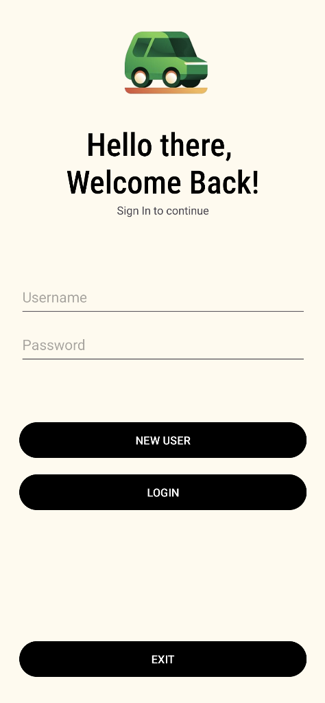
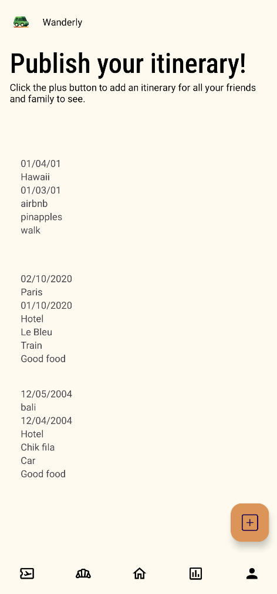
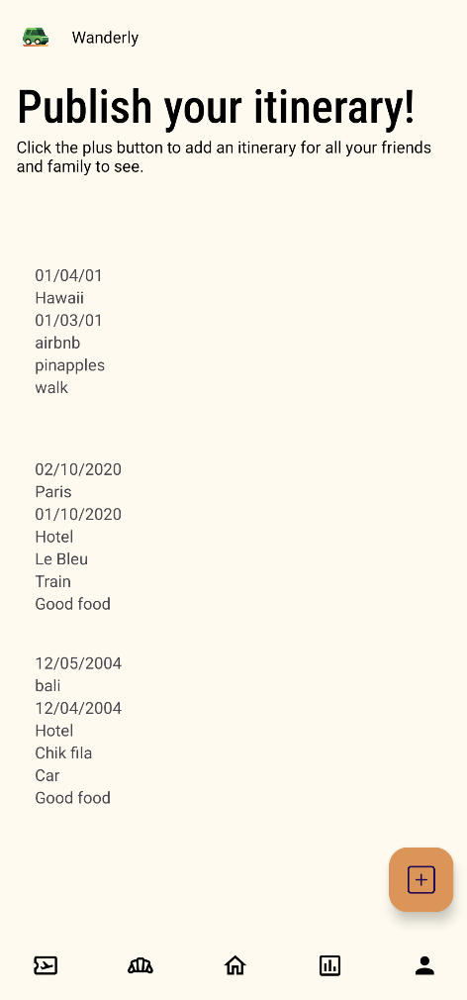
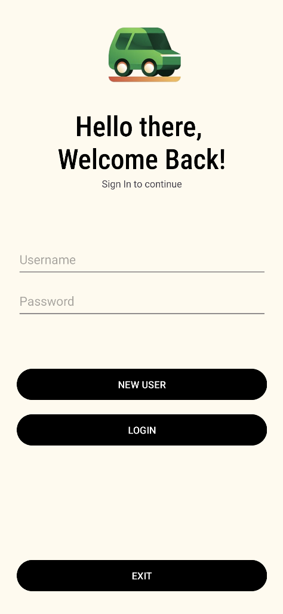
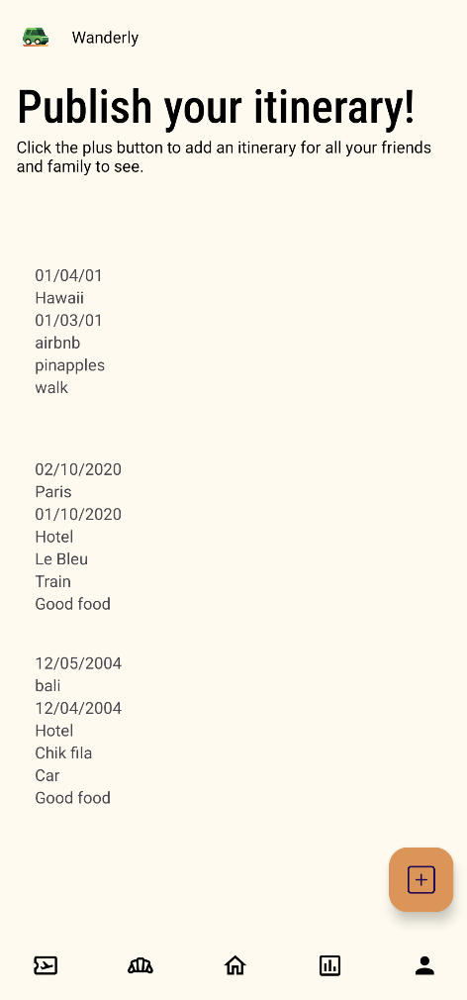

 

WanderSync's user interface (UI) is designed to provide an intuitive and delightful user experience 🎎 for travelers. The design is clean, modern, and user-friendly, with a focus on simplicity and 🔧 ease of use.
Wanderly • Video Demo


The WanderSync UI consists of several key screens, each serving a specific purpose and providing unique features to enhance the user experience.
The home screen allows the user to either click start to launch the application or exit to leave the app. The login screen allows users to create accounts or log in securely, with error handling for invalid credentials and Firebase authentication integration.
The destination screen is where users can log, view, and manage travel destinations. This screen allows the user to click the plus button to launch a popup form where they can then log their destination name, start date, and end date.
The travel community screen allows users to publish their full itinerary and view other users' itineraries, providing a social aspect to the app. Users can add personalized notes to thier itinerary (the last line) while adding other information like thier destination name, food recommendations, and where they stayed.